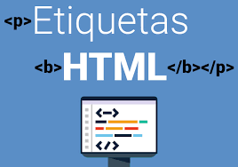

LAS ETIQUETAS

De acuerdo a : https://www.arkaitzgarro.com/xhtml/capitulo-3.html
Las etiquetas son la estructura básica del HTML. Estas etiquetas o tags se componen y contienen otras propiedades, como son los atributos y el contenido.
HTML define un total de 91 etiquetas, de las cuales 10 se consideran obsoletas. Sin embargo, una etiqueta por sí sola a veces no contiene la suficiente información para estar completamente definida.
Para ello contamos con los atributos: pares nombre-valor separados por "=" y escritos en la etiqueta inicial de un elemento después del nombre del elemento. El valor puede estar encerrado entre "comillas dobles" o 'simples'.
Existen, también, algunos atributos que afectan al elemento por su presencia en la etiqueta de inicio,
como puede ser el atributo ismap para el elemento img.